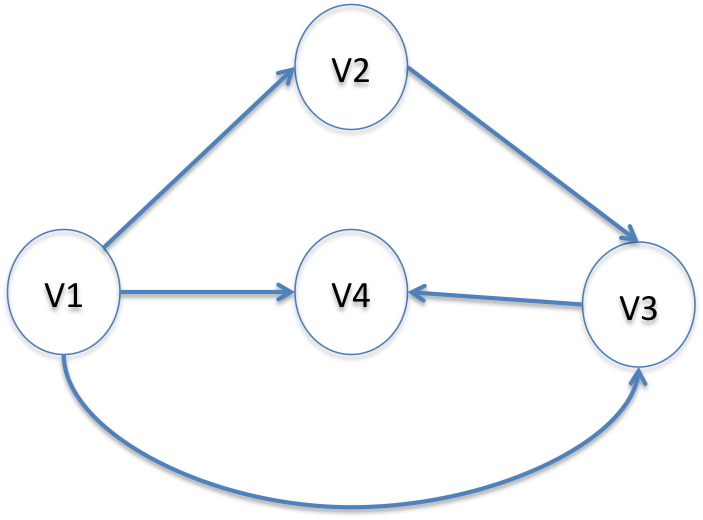
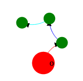
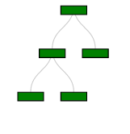
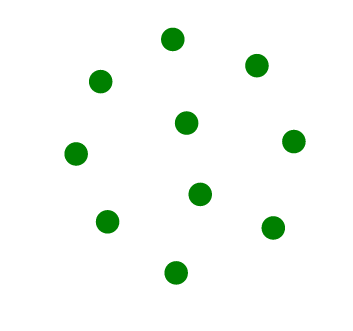
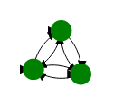
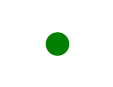
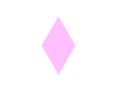
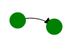
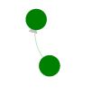

What is Bridges?
Bridges is a set of libraries that allow the user to build data structures using the building blocks from the Bridges Elements class.
Bridges currently supports the following types of Elements:
- Single Linked Elements - elements that only point to one other element
- Double Linked Elements - elements that point to two other element
- Tree Elements - elements that only point to a left and right child element
- BST Elements - a tree element with a "key", to be used in binary search implementations
- Array Elements - elements designed to be used in array structures
- GraphAdjMatrix - containers designed to be used as graphs
- GraphListMatrix - containers designed to be used as graphs
What is an Element<E>?
Element<E> is the superclass of SLelement<E>,
DLelement<E>, TreeElement<E>, and ArrayElement<E>.

You will normally
be using these classes to build data structures. Since they are
subclasses of Element<E>, they inherit a common set of methods
and instance variables, so to a certain extent they will share a
common set of behavior. However, since they are all different
classes, they will have methods and instance variables that are
unique to their particular class.
What about Graphs and Arrays?
Bridges also contains classes for ArrayOfElements, GraphAdjacencyList, and GraphAdjacencyMatrix, however, these do not subclass from the Element class.
This is because Graphs and Arrays themselves are containers that hold Bridges classes. Internally, Bridges graphs and arrays will hold subclasses of Element. When you interact with the graphs and arrays, you will typically be adding an Element to them or retrieving an Element from them.
What is the <E>?
<E> is the Java generic parameter. It represents any class, so
you can have an SLelement<String> or an
SLelement<Integer> or any other class.
You
may be wondering, if <E> can be any class, then how does
Element know how to behave since a Boolean does not have the same
methods available as a String?
Since we didn’t
put any restrictions on <E> inside the Element class signature,
we can only call methods of <E> that are common to ALL java
objects. We will not be allowed to call a method on E that is
particular to any one class.
In this way, we can
allow the Element<E> class to function as a container. The
container doesn't care what it's holding, and whatever the container
is holding doesn't influence the behavior of the container.

What is the <E>?
<E> is the Java generic parameter. It represents any class, so
you can have an SLelement<String> or an
SLelement<Integer> or any other class.
You
may be wondering, if <E> can be any class, then how does
Element know how to behave since a Boolean does not have the same
methods available as a String?
Since we didn’t
put any restrictions on <E> inside the Element class signature,
we can only call methods of <E> that are common to ALL java
objects. We will not be allowed to call a method on E that is
particular to any one class.
In this way, we can
allow the Element<E> class to function as a container. The
container doesn't care what it's holding, and whatever the container
is holding doesn't influence the behavior of the container.
How does the SLelement<E> work?
SLelement<E> stands for Singly Linked Element and is a type of
container that only has one pointer which points to another
SLelement<E>. So an SLelement<E> "knows" who it's
pointing at but it does not know who pointed at it.

In this case SLelement1 points to SLelement2.
Calling getNext() on SLelement1 will return SLelement2, and calling
getNext() on SLelement2 will return SLelement3.
In this example, SLelement3 is not pointing to another SLelement so
calling getNext() on SLelement3 will return Null. This is desirable
since you will know that you’ve reached the end of all of the linked
SLelements when one of them returns Null.
Notice
that there is no getPrev(). SLelement2 has no idea what element came
before it. So, you CANNOT go backwards.
How does the DLelement<E> work?
DLelement<E> stands for Doubly Linked Element, and is a type of
container that has two pointers that point to other
DLelement<E>. So a DLelement<E> “knows” who it’s pointing
at, AND it knows who pointed at it.

Calling getPrev() on DLelement2 will return DLelement1.
DLelement3 does not have a next pointer pointing to another DLelement so calling getNext() on DLelement3 will return Null, indicating the end of the linked elements. Since DLelement <E> have a getPrev() method, they can move forwards AND backwards through the linked elements.
How does the TreeElement<E> work?
TreeElement<E> is another type of container that has two
pointers that point to two child TreeElement<E>. By convention,
these two pointers are called "left" and "right and the top of the tree
is referred to as the "root".

By convention, the “top” of the tree is called the root.
Root has two pointers, so calling Root.getLeft() will return the
TreeElement T1 and calling Root.getRight() will return the
TreeElement T2.
Note that there is no pointer
from T1 or any other element back to its root.
How does a TreeElement<E> differ from a
DLelement<E>?
DLelement<E> also has two pointers, but one points to the
previous element. TreeElement<E> does not point to the previous
element, but points at two different children.
DLelement<E> has a next and previous element, by convention, a
TreeElement<E> has a right and left element.
Generally a TreeElement<E> will be used in a recursive data
structure and that data structure that will specify a particular
relationship that all of the right elements have relative to it’s
root and a different relationship that all left elements have
relative to it’s root (a binary search tree, for example).
How does the BSTElement<E> work?
BSTElement<E> is another type of container that has two
pointers that point to two child BSTElement<E>. By convention,
these two pointers are called "left" and "right", and the top of the tree is called the "root".
At this point, you may be wondering how a BSTElement<E> differs from a regular
TreeElement<E>. The fundamental difference between the two classes is that the
BSTElement<E> holds an additional piece of data called the "key". The key is used
to enforce a logical ordering on the tree structure independent of the element that is being held.
A typical example would be a binary search tree where all of the keys of the left child are smaller than the keys of the right child.

Notice that the key for BST1 is smaller than the key for the root so it's to the left of the root.
Also notice that the key for BST3 is smaller than the key for BST2, but larger than the key for the root. So BST3 sits on the left child of BST2, but in the right child of the root.
How does the ArrayElement<E> work?
ArrayElement<E> is a building block for an array of elements.
It has NO POINTERS to other objects. Unlike all of the
other elements, it is designed to enable direct access to a
particular element at a particular index.

In this case once you’ve made an array of ArrayElements, you get
access to the element by using the index, just like a normal Java
array.
For example myArray[2] would return
ArrayElement2
How do the GraphAdjList<K, E> and GraphAdjMatrix work<K, E>?
A graph is a set of vertices connected by edges. Unlike tree structures, a graph can have any number of vertices with any number of edges connecting them. In fact, a tree structure is just a special case of a graph.

Bridges represents graph structures in one of two ways: either using an adjacency list representation or an adjacency matrix representation.
In the adjacency list representation, the GraphAdjList is holding a HashMap of vertices associated with a linked list of the adjoining vertices.
In the adjacency matrix representation, the GraphAdjMatrix is mimicing a 2 dimensional array to describe which vertices are connected (due to limitations with using generics and arrays in Java, Bridges actually uses nested HashMaps).
Typically, the reason to use one version over the other revolve around space versus time trade offs. Since the GraphAdjList representation uses a linked list to track neighboring nodes, searching for a particular neighbor is an O(n) operation. The GraphAdjMatrix has O(1) access to any particular neighbor, but it is essentially holding a two dimensional array. On sparse graphs, this can waste a considerable amount of space.
Java Code example for a Single Linked Element
//note, you need to replace "yourAPIKey" and "yourUserName"
//with the information you received from the Bridges website when you created an account
SLelement
SLelement
SLelement
el1.setNext(el2);
el2.setNext(el3);
//after it's accepted, you should see the web address in the console
Results
When you run your code, you should see a similar message output to the console:So, now you can go to the website and see the following visualization:

If you mouse over the vertices, you can see the labels.
Java Code example for a Double Linked Element
//note, you need to replace "yourAPIKey" and "yourUserName"
//with the information you received from the Bridges website when you created an account
DLelement
DLelement
DLelement
//to link the elements together into a list
el1.setNext(el2);
el2.setNext(el3);
el1.setPrev(el0);
el2.setPrev(el1);
el3.setPrev(el2);
el1.getLinkVisualizer(el2).setColor("red");
el2.getLinkVisualizer(el3).setColor("turquoise");
el3.getLinkVisualizer(el2).setColor("magenta");
el3.getLinkVisualizer(el2).setThickness(10.0);
el2.getLinkVisualizer(el1).setColor("blue");
el2.getLinkVisualizer(el1).setThickness(10.0);
el1.getLinkVisualizer(el0).setColor("red");
el1.getLinkVisualizer(el0).setThickness(10.0);
//after it's accepted, you should see the web address in the console
Results
When you run your code, you should see a similar message output to the console:So, now you can go to the website and see the following visualization:
 <
<If you mouse over the vertices, you can see the labels.
Java Code example for Tree Elements
//note, you need to replace "yourAPIKey" and "yourUserName"
//with the information you received from the Bridges website when you created an account
Bridges
TreeElement
root.setRight(new TreeElement
t1.setLeft(new TreeElement
t1.setRight(new TreeElement
//after it's accepted, you should see the web address in the console
Results
When you run your code, you should see a similar message output to the console:So, now you can go to the website and see the following visualization:

If you mouse over the vertices, you can see the labels.
Java Code example for an Array of Array Elements
//note, you need to replace "yourAPIKey" and "yourUserName"
//with the information you received from the Bridges website when you created an account
Bridges
myArray[k] = new Element
//after it's accepted, you should see the web address in the console
Results
When you run your code, you should see a similar message output to the console:So, now you can go to the website and see the following visualization:

If you mouse over the vertices, you can see the labels.
Java Code example for a GraphAdjList
//note, you need to replace "yourAPIKey" and "yourUserName"
//with the information you received from the Bridges website when you created an account
gr.addVertex("Becky", "Becky");
gr.addVertex("Sam", "Sam");
gr.addEdge("John","Sam", 1);
gr.addEdge("Becky", "John", 1);
gr.addEdge("Becky", "Sam", 1);
//after it's accepted, you should see the web address in the console
Results
When you run your code, you should see a similar message output to the console:So, now you can go to the website and see the following visualization:

If you mouse over the vertices, you can see the labels.
Java Code example for a GraphAdjMatrix
//note, you need to replace "yourAPIKey" and "yourUserName"
//with the information you received from the Bridges website when you created an account
gr.addVertex("Becky", "Becky");
gr.addVertex("Sam", "Sam");
gr.addEdge("John","Sam", 1);
gr.addEdge("Becky", "John", 1);
gr.addEdge("Becky", "Sam", 1);
//after it's accepted, you should see the web address in the console
Results
When you run your code, you should see a similar message output to the console:So, now you can go to the website and see the following visualization:
If you mouse over the vertices, you can see the labels.
Changing Element visualization properties
Each Element class has an ElementVisualizer that controls how the visualization looks. You can change how an Element is visualized by interacting with that Element's ElementVisualizer. You can use the ElementVisualizer to change the size, shape, color, and opacity. See the following code examples:The end result should have been to transform your Element visualization from the green circle on the left to the big pink diamond on the right.
Changing Edge visualization properties
Each Element class has an LinkVisualizer that controls how the edges between the nodes appear.. You can change how an edge is visualized by interacting with that Element's LinkVisualizer. You can use the ElementVisualizer to change the thickness, color, and opacity. See the following code examples:SLelement
The end result should have been to transform your the edge connecting the two nodes from the original black line on the left to the faint green line on the right.
